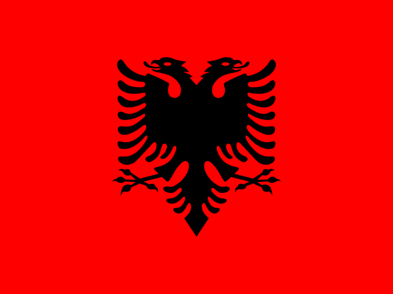

Countries › Africa
Comoros
Where the Comoros stands out
▲ MOST
1st Tuvalu100.0%
Tuvalu100.0%
2ndComoros41.5%
3rd Sao Tome and Principe40.9%
Sao Tome and Principe40.9%
2nd of 189 · Food and Agriculture Organization (FAO), via World Bank, World Development Indicators (WDI), 2023
▲ MOST
4th Guinea-Bissau239
Guinea-Bissau239
5thComoros229
6th Laos225
Laos225
5th of 170 · FAO Food Balance Sheets, 2023
▲ MOST
6th Uganda80.3%
Uganda80.3%
7thComoros79.5%
8th South Africa79.4%
South Africa79.4%
7th of 189 · FAO, via World Bank, WDI, 2023
▲ MOST
9th

Albania38.4%10thComoros32.5%
11th Dominica30.8%
Dominica30.8%
10th of 193 · United Nations Department of Economic and Social Affairs (UN DESA) International Migrant Stock 2024, 2020
Size, sea and borders
1,861 square kilometres (km²)170th of 195
CoastlineCentral Intelligence Agency (CIA) World Factbook, 2024 edition, 2024 · web.archive.org (cia.gov)
340 kilometres (km)112th of 193
Coastline for its sizeCIA World Factbook and World Bank (derived), 2024 · web.archive.org (cia.gov)
182,697 metres (m) per 1,000 km²27th of 192
Number of land bordersGeoNames, 2026-08 · download.geonames.org
0158th of 195, tied with 37
Land and height
2,360 m103rd of 194
17.7% of land128th of 192
Agricultural landFAO, via World Bank, WDI, 2023 · data.worldbank.org
79.5% of land7th of 189
30.0% of land28th of 190
Orchards and plantationsFAO, via World Bank, WDI, 2023 · data.worldbank.org
41.5% of land2nd of 189
People
850,387 people159th of 195
Population densityWorld Bank, WDI, 2023 · data.worldbank.org
457 people per km²18th of 192
20.3 years152nd of 195
66.8 years156th of 195
Fertility rateWorld Bank, WDI, 2023 · data.worldbank.org
3.9 children per woman30th of 194
People living in one homeUN DESA Household Size and Composition, 2022 · un.org
5.423rd of 152
Share of its people living abroadUN DESA International Migrant Stock 2024, 2020 · un.org
32.5%10th of 193
Food, power and travel
229 kg per person a year5th of 170
5.8 kg per person a year18th of 171
3170th of 189, tied with 7
Football and chess
Football internationals played, all timeInternational football results (martj42), 2026 · github.com
151170th of 193
See all 129 facts about the Comoros
Showing 20 highlights for the Comoros. Rank counts from the highest value among the countries that have data: 1st is the most. Ties share a rank. Data version 91, 22 November 2026.
Sort the Comoros against four others
The game has figures for the Comoros on 169 of its 190 questions.
The same game for Android and iOS. It launches on 10 December 2026.
Out now.